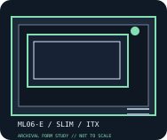

[ IDENTIFIED ENCLOSURE // ML06-E ]
SilverStone Milo ML06-E
A compact slim Mini-ITX case with room for low-profile expansion and 2.5-inch storage; confirm the exact ML06-E front-bay configuration before assembly.

MODEL / FIT NOTE: ML06-E is a model-specific enhanced ML06 revision; do not assume all ML06/ML06-E front-panel, optical and bracket parts are interchangeable.
Mechanical specifications and fit
| Model and revision | SilverStone Milo ML06-E (chassis model ML06-E). |
|---|---|
| Dimensions / volume | 350 × 99 × 205 mm (W × H × D); approximately 7.1 L. |
| Motherboard / slots | Mini-ITX motherboard; two low-profile expansion slots. |
| Power supply | SFX PSU, up to 130 mm long. |
| Graphics-card clearance | Low-profile graphics card up to 175 mm long; low-profile bracket and card height required. |
| CPU-cooler clearance | CPU cooler up to 70 mm high. |
| Radiator clearance | No dedicated radiator mount specified; the thin chassis is designed for low-profile air cooling. |
| Drive clearance / bays | Up to two 2.5-inch drives; slim optical-drive support is configuration-dependent. No 3.5-inch drive bay. |
Compatibility notes
Published maxima are envelopes, not a guarantee that every maximum fits simultaneously. Measure the selected card, PSU body and cable exits, CPU cooler and radiator/fan stack together; confirm drive-cage position and panel closure before purchase or assembly.
- Install only the motherboard standoffs matching the supported board layout and verify no unused standoff touches the PCB.
- Check power-plug bend radius, graphics-card thickness and intake clearance against the exact panel and drive-bracket configuration.
- Use the cited manufacturer manual for installation sequence and revision-specific bracket placement; do not infer part interchangeability from a shared product family.
Manufacturer specifications and manual
- SilverStone SilverStone Milo ML06-E official product specificationsManufacturer product page for the identified chassis model and its published mechanical envelope.
- SilverStone ML06-E official installation manual (PDF)Manufacturer-hosted model manual for assembly, bracket positioning and fit verification.